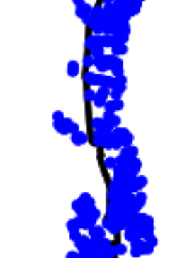
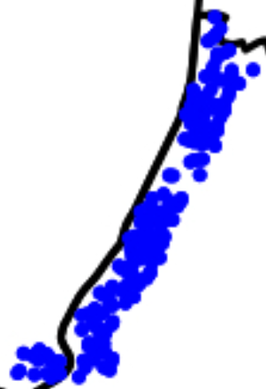

Discussion of Local public goods as amenities: Evidence from London by Emiliano Rinaldi
CCA PhD Conference 2025
![]()
17 November, 2025
Overview
- What is the impact of changes in local govt spending on the sorting behaviour in a city?
- Use a 2010 policy change to investigate this question.
- Use detailed data on prices, commuting, land rents etc to estimate key elasticities and parametrize a model a la Redding et al
- Run a counteractual that predicts changes in sorting-related outcomes.
Literature Overview
- Not doing justice to the vast literature on local public finance.
- the premise “people care about local services like trash collection” needs to be supported much stronger. Reference to Zahra, Fahmi, and Satriatna (2018) is weak.
- Should have a close look at Bayer and Timmins (2005), Bayer and Timmins (2007), Bayer et al. (2016)
- it seems you take for granted that the spending effects are substantial, but this is far from clear.
Local Authority Spending
Local authorities in England deliver social care for children and adults, ‘neighbourhood services’ such as libraries and waste collection, and some aspects of transport, housing and education.
- Schooling is a major sorting driver. Who pays for that?
- Substantial amount of funding comes via government grants.
- Council tax + business tax are not freely chosen.
- Talk to colleagues at LSE and IFS. David Phillips. Giorgio Pietrabissa, Daniel Sturm…
Model
Estimation of \(\eta\)
Key object of interest:
\[ \ln P_{ijr} = \alpha + \beta \Delta \ln G_r + X_j + \epsilon_i \]
should be \[ \Delta \ln P_{ijr} = \alpha + \eta \Delta \ln G_r + X_j + \epsilon_i \]
\[\begin{align} \ln P_{ijr,0} & = \alpha + \eta \ln G_{r,0} + X_j + \epsilon_{i,0}\\ \ln P_{ijr,1} & = \alpha + \eta \ln G_{r,1} + X_j + \epsilon_{i,1}\\ \Delta \ln P_{ijr} & = \phantom{\alpha + }\gamma \Delta \ln G_{r}\phantom{X_j +a} + u_{i}\\ \end{align}\]
\(X_j\) will capture fixed effects of the border and area. 👉 No.
Estimation of \(\eta\)
The assumption is that there are no policy or historical differences that would lead houses on one side of the border to be more expensive because they are larger, newer, or more luxurious.
Estimation of \(\eta\)
Estimation of \(\eta\): Borders


Counterfactual - Comments 1
- Baseline, all councils have the same spending level G = 1. So, all differences are in b_r. Then increase \(G\).
- Document clearly how you computed the change in \(G\). this is far from obvious.
- in counterfactual, figure 11, prices change by 0.36% at most - median seems to be 0.01%. Compared to a maximum amenity increase of 45% (figure 9), that seems quite a small effect. Why is that? How much do we trust this result?
- How did those changes compare to what happened in the data?
- For me, the main thing missing from the model is a taxation module.
Counterfactual - Comments 2: Fair Funding Review 2.0
Starting 2026-27 local council funding will change (again) dramatically. (You don’t want to run a counterfactual for the past.)
- separate spending needs formula for key services: adult social care, children’s services, home-to-school transport, temporary accommodation, highways maintenance and fire services
- Assessment of how much can be raised from Council Tax
- To be updated in future
- 3-year phase in.
IFS has the authoritative writeup.
Counterfactual - Comments 3
- intitially talk about inequality. but all model agents get the same level of utility. wouldn’t it be interesting to relax this?
End
Nice paper, promising setup, hope I gave some ways to further improve!
Comments